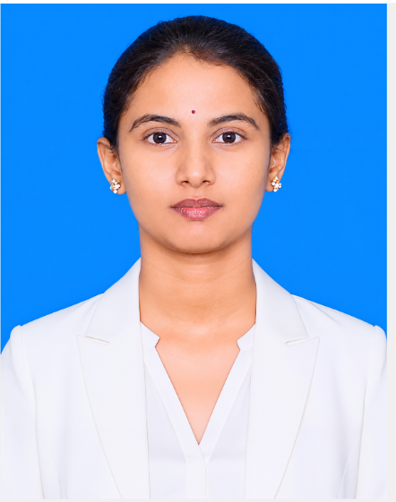

PresentTrainee
Embedded Software Development Trainee
Radar Technological Centre
Learning C programming, Embedded C, microcontroller fundamentals, communication protocols, Linux, networking, and real-time embedded applications.
Student portfolio · Electronics & Communication Engineering
An aspiring Embedded Software Developer interested in creating reliable connections between hardware, software, and real-world applications.

About me
I am an Electronics and Communication Engineering graduate with a strong interest in Embedded Systems, electronics development, and IoT technologies.
Through academic projects and trainee experience, I am building practical knowledge in C programming, microcontrollers, PCB development, communication protocols, Linux, and hardware–software integration.
My toolkit
C · C++ · Embedded C fundamentals
Arduino · ESP32 · Microcontrollers
UART · SPI · I2C · TCP/IP basics
Linux · Problem-solving · Teamwork · Adaptability
Experience
Radar Technological Centre
Learning C programming, Embedded C, microcontroller fundamentals, communication protocols, Linux, networking, and real-time embedded applications.
Ekalavya Innovative Solutions
Gained practical experience in PCB layout, component placement, assembly, SMT and reflow soldering machines, testing, inspection, and manufacturing workflows.
An academic project developed using Embedded and IoT technologies to support real-time alerts for auxiliary transformer failure conditions.
Education
Sree Rama Engineering College, Tirupati
CVSE, Tirupati
Let’s connect
I’m open to Graduate Engineer Trainee and Embedded Systems Engineer opportunities.
Email me ↗